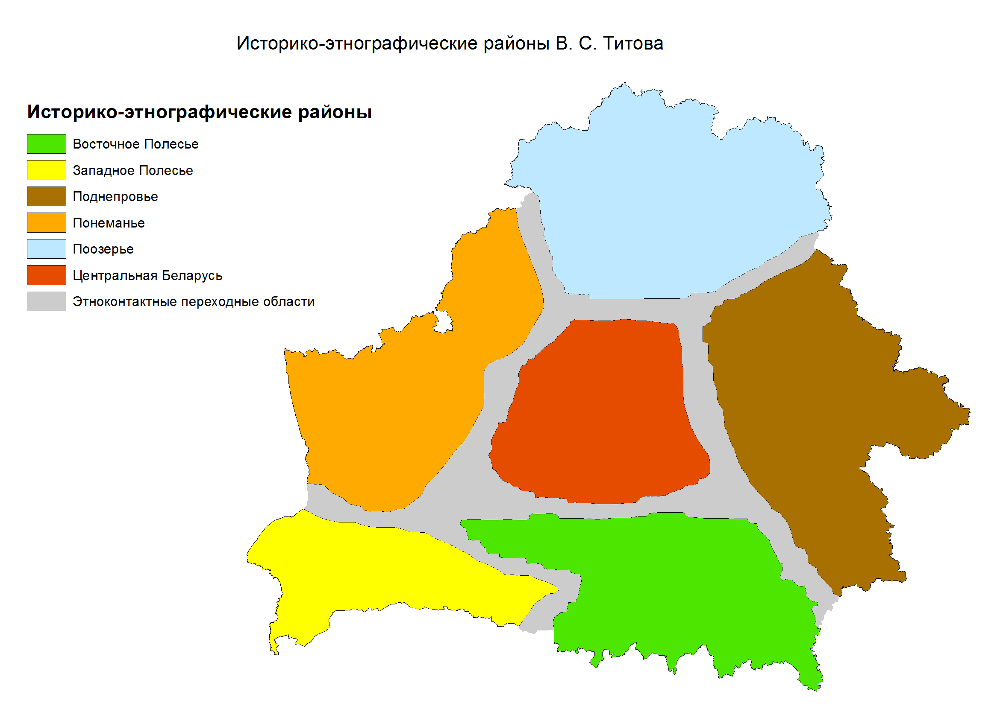
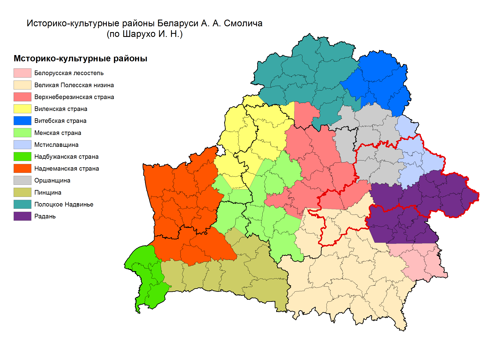
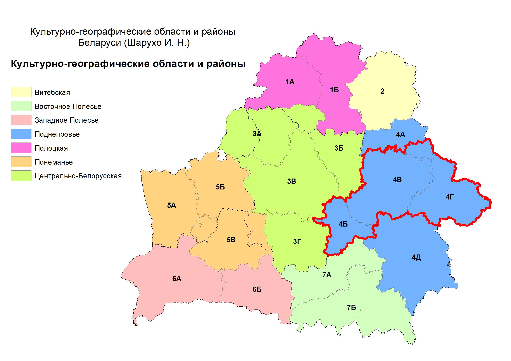
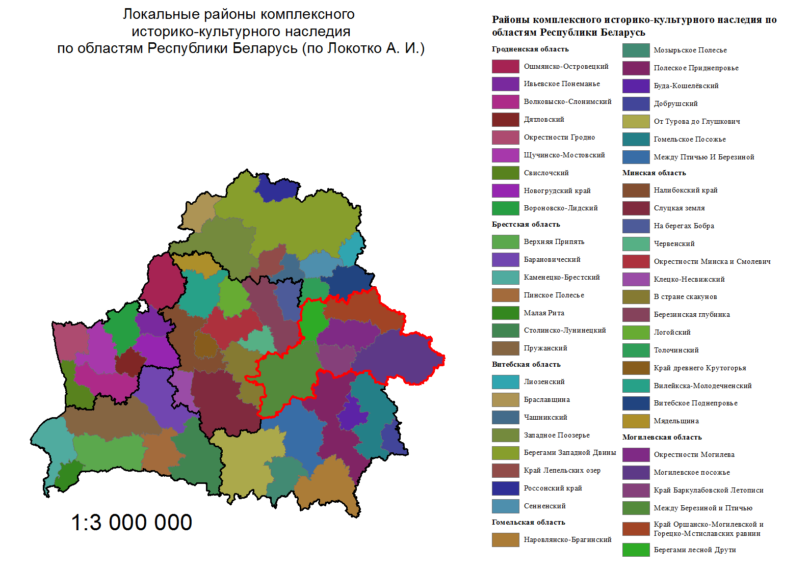

В. С. Титов выделяет историко-этнографические районы: Поозерье, Понеманье, Центральная Беларусь, Поднепровье, Западное Полесье, Восточное Полесье

А. А. Смолич провел историко-культурное районирование. Было рассмотрено 65 уездов по следующим показателям: густота населения, рельеф, почва, климат, историко-экономические связи, лесистость, историко-политические границы.

Культурно-географическое районирование отражает сходство таких показателей как: история природопользования, заселение, современные процессы в преобразовании природы, этнические процессы, особенности развития дифференцированных подсистем, компонентов культуры (производственные силы, предметы потребления, культурный ландшафт, язык, письменность литература; нравы, обычаи, этика; религии, искусство, образование). Акцентировалось внимание на достаточно хорошо изученные региональные особенности диалектов, нравов, «строев» одежды, народных промыслов, народной архитектуры.

Белорусский этнолог, историк А. И. Локотко определил локальные районы историко-культурного наследия на территории Беларуси по административным областям. При этом использовались фундаментальные и прикладные исследования в отрасли народного и профессионального искусства, этнокультурные процессы, этногенеза, и этническая история белорусской народной традиционной культуры, фольклористики, истории культурных ценностей, архитектуры.